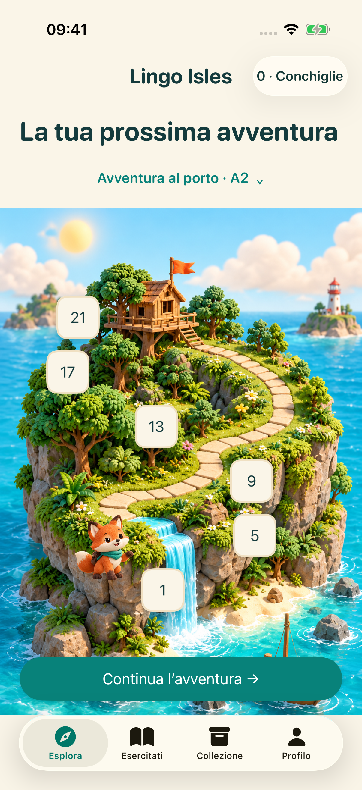
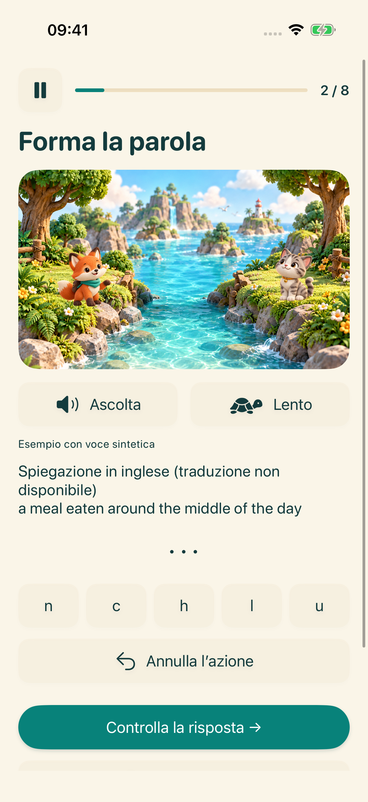
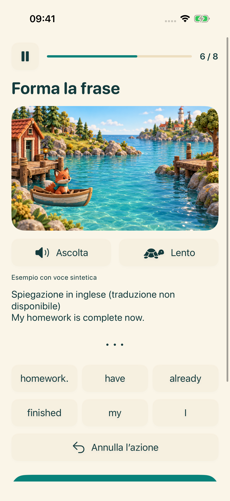
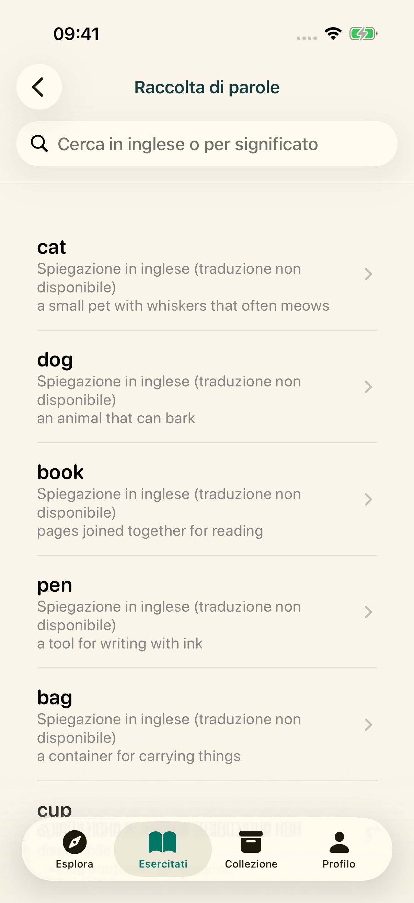

La prossima isola ti aspetta
Scegli la tua fase di apprendimento e segui un percorso di brevi esercizi d’inglese.
Esplora quattro isole di apprendimento. Ascolta, forma parole, componi frasi e prova la tua voce: una piccola scoperta alla volta.
Esplora l’avventuraLancio su iPhone e iPad in preparazione


Scegli la tua fase di apprendimento e segui un percorso di brevi esercizi d’inglese.

Ascolta la voce di sistema e disponi le lettere per esercitarti nell’ortografia inglese.

Metti le parole in ordine e scopri come si costruiscono le frasi in inglese.

Esplora il lessico, salva i preferiti e ripassa ciò che hai imparato.

Registrati, riascolta e riprova. La trascrizione facoltativa sul dispositivo è disponibile sui dispositivi compatibili. È un esercizio, senza valutazione della pronuncia.
L’interfaccia supporta 16 lingue. Le spiegazioni didattiche sono disponibili in inglese e cinese semplificato; per le altre lingue, quando manca una traduzione, vengono mostrate spiegazioni in inglese chiaramente segnalate.
I contenuti didattici e i progressi sono salvati sul dispositivo. Non servono un account né una sincronizzazione cloud gestita dallo sviluppatore. Le risorse vocali dipendono dal dispositivo; i servizi pubblicitari e per la privacy richiedono una connessione di rete.
I profili sotto i 18 anni o senza fascia d’età non avviano il flusso pubblicitario. Per gli adulti, gli annunci dipendono dalle scelte sulla privacy e dalla disponibilità. Guardare gli annunci con premio è facoltativo.